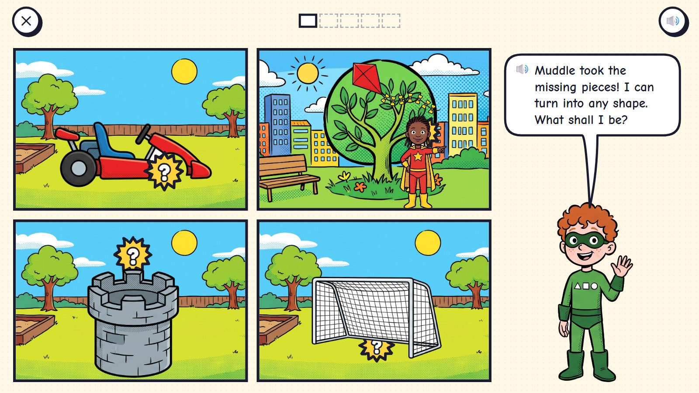
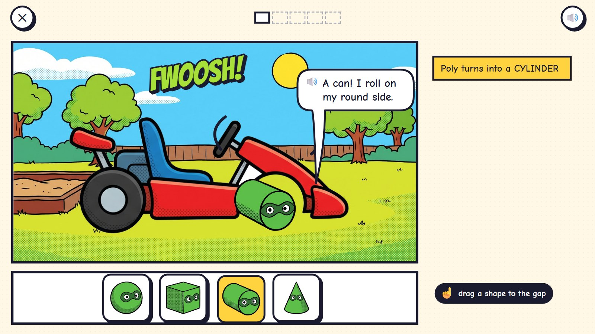
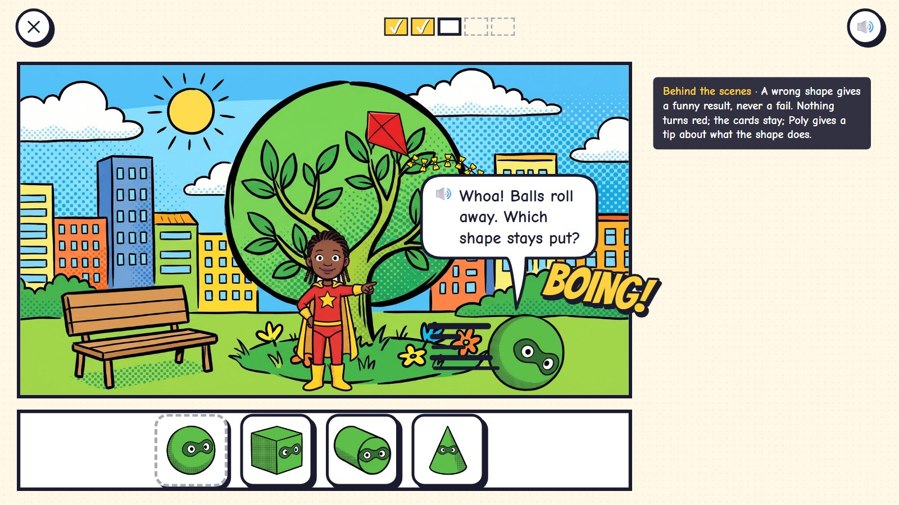
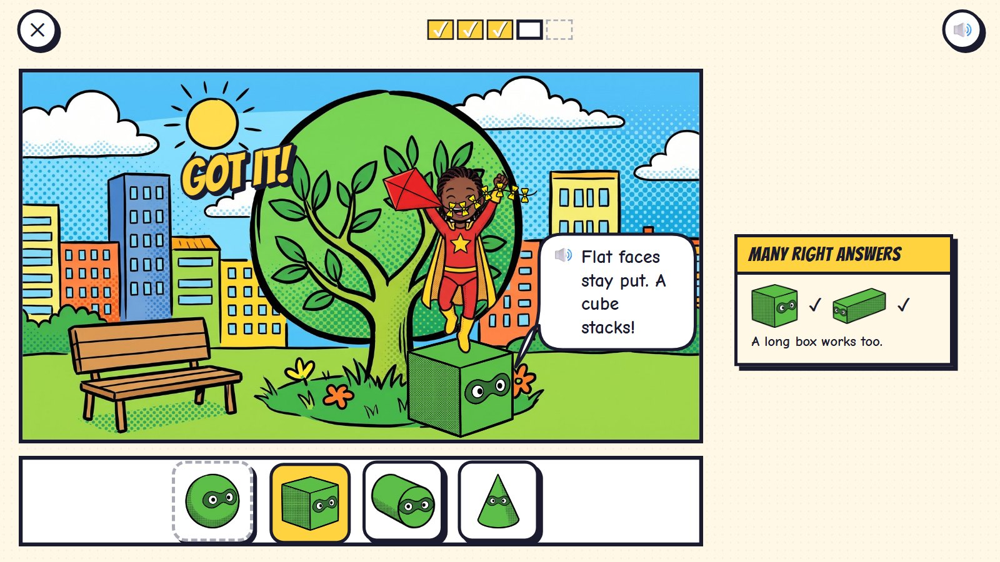
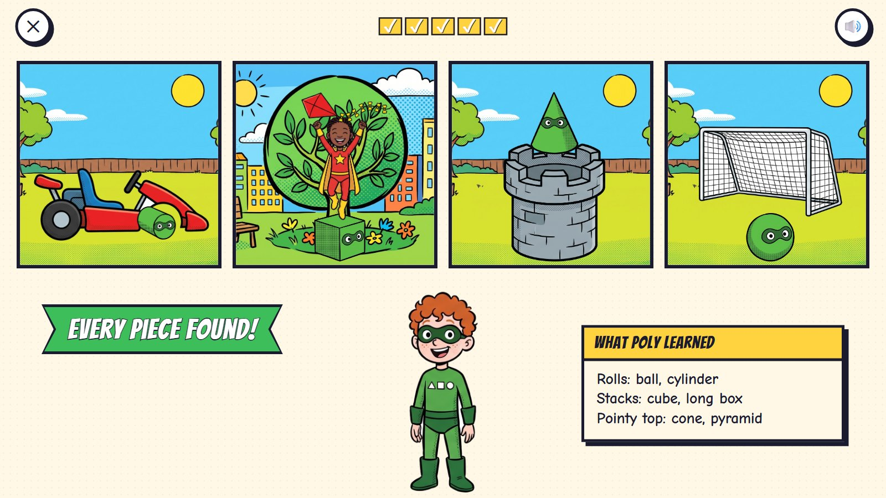

Missing Pieces
Muddle took the missing pieces of the playground: a wheel from the kart, the step up to a stuck kite, the roof of the tower, the football. Poly can turn into any solid shape. The child picks the shape, Poly becomes it, and the page turns to show what happens: a can rolls like a wheel, a ball rolls away, a cube stays put. Children learn what solid shapes do before their names.
Pre-K–Grade 1 · ages 4–7 hero: Poly panel power: drag a shape into the gap; the page turn shows what happens
The maths: Know solid shapes and what they do (roll, stack, slide, pointy top); name them: ball (sphere), box (cube), long box (cuboid), can (cylinder), cone, pyramid; later count faces, edges and corners. One activity is five rounds, about two minutes. Everything works with one finger or a mouse.
🎉 The fun
Poly turns into whatever the child picks, and the page turn shows the result: the kart rolls, the ball bounces away, the tower gets its hat.
🎥 The view
A page of four panels; each opens into a big panel; the finale is the four fixed panels in a strip.
🎆 The finale
The playground strip, all fixed, and Poly's notebook of what each shape does (3 seconds).
Six moments

1Something is missing
Four panels around the playground, each with a piece missing: the kart's front wheel, a step up to the kite, the tower's roof, the football.
🔊 Muddle took the missing pieces! I can turn into any shape. What shall I be?
Each panel is one puzzle; the child picks which to fix first.

2A can for a wheel
The child drags the can (a cylinder) into the gap. FWOOSH: Poly becomes the wheel.
🔊 A can! I roll on my round side.
The shapes are cards with Poly's face. The name comes after: "Poly turns into a CYLINDER".

3Does it work?
The page turns: the kart rolls, with Poly as its wheel. The child's hero cheers.
🔊 Wheee! A cylinder rolls!
The page turn is the test: the world shows what the chosen shape does.

4A wrong try
A step up to the kite: the child picked the ball. It rolls away. BOING!
🔊 Whoa! Balls roll away. Which shape stays put?
A wrong shape gives a funny result, never a fail. Nothing turns red; the cards stay; Poly gives a tip about what the shape does.

5Flat faces stay put
The cube stacks. The hero climbs it and catches the kite. A long box would work too.
🔊 Flat faces stay put. A cube stacks!
Many right answers: the cube and the long box both count, and each is kept.

6Every piece found
The page turns to a strip of the whole playground, fixed: the wheel, the step, a cone for a roof, the ball in the goal.
🔊 Every piece found!
Poly's notebook: rolls (ball, cylinder), stacks (cube, long box), pointy top (cone, pyramid).
Mock-ups: Gemini's comic pictures (scenes, heroes, things) with the maths drawn by code in the same inked look, the way the app would draw it, so every count, clock and colour is exact.
What is asked, for one age
- A wheel for the kart
- A step up to the kite
- A roof for the tower
- A ball for the goal
- Which two shapes can roll? (sort four)
One activity card. The same activity serves other ages with other numbers:
| Age | What changes |
|---|---|
| 4 | Ball, box, can and cone, with everyday names first. One property at a time: does it roll? |
| 5 | Six shapes, with the pyramid and the long box. Rolls, stacks, pointy top. Shape names spoken. |
| 6–7 | Faces, edges and corners: "I have 6 flat faces, all squares". Choose from a description. |
Wrong answers we expect, and what happens
| Mistake | Looks like | What happens (never red, never "wrong") |
|---|---|---|
| A ball for a step | picks something that rolls | it rolls away; "Which shape stays put?" |
| A cube for a wheel | picks something with no round side | the kart goes thunk, thunk and stops; "Wheels need a round side." |
| A square for a cube | names the solid shape with a flat shape's name | "A square is flat like a sticker. I am a cube: a box with six square faces." |
| A flat top for a roof | picks the standing can | the top stays flat; "Towers like a pointy top." |
What it needs
- The playground and the park, each drawn once
- The kart, the tower, the goal and the kite (cut-outs, each with its gap)
- Poly's seven shapes, each with his mask
- Poly in three poses
- The page turn drawn by code
- Voice: shape names and tips
Test robot: Reads which piece is missing, picks a shape with the property needed (rolls, stacks, pointy top), checks the result after the page turn, and once picks a wrong shape on purpose to check the tip and that the card stays.
One question
← Back to Comic City · Kitten Rescue · Missing Pieces · Rooftop Hops · Clock Tower · Echo's Copies · Colour Lab · Sticker Pack